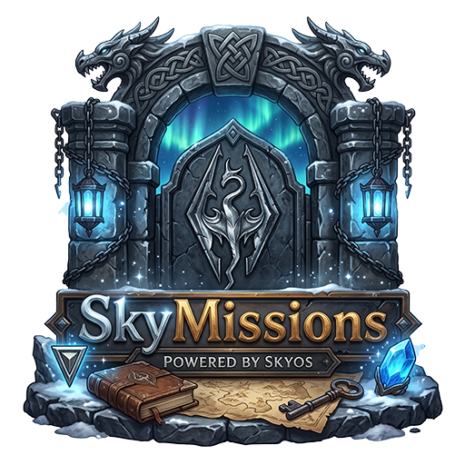

MODDER REFERENCE · C ABI VERSION 1
SkyMissions API
Let native SKSE plugins register event-driven missions that award SkyPoints and offers whose purchases are broadcast to the owning plugin.
What the API provides
The optional header exposes a versioned C ABI from the already-loaded SkyMissions.dll. It lets an SKSE plugin register missions that track SkyRewrite journal events and offers that appear in SkyStore. No C++ standard-library types or import library cross the API boundary.
- Mission definitions can match an event type plus optional FormID, base FormID, subject text, and identity text.
- Players accept missions in SkyMissions. Progress, completion, and earned SkyPoints are saved per character.
- Store offers display a name, description, image, and SkyPoints price. Your plugin receives a purchase message and fulfills the offer.
Requirements: SkyOS Core, SkyMissions, and SkyRewrite must be installed in the active profile. The separate SkyRewrite API Header supplies the named event constants used in mission definitions. Register definitions during plugin initialization so they are available when SkyMissions opens.
Connect and register a mission
#include <windows.h>
#include "SkyMissionsAPI.h"
#include "SkyRewriteAPI.h"
SkyMissionsAPI g_missions{};
bool RegisterExampleMission()
{
const HMODULE module = GetModuleHandleW(L"SkyMissions.dll");
if (!SkyMissions_LoadAPI(module, &g_missions)) return false;
SkyMissionsMissionV1 mission{};
mission.structSize = sizeof(mission);
mission.eventType = SKYREWRITE_EVENT_BRAWL;
mission.goal = 3;
mission.reward = 75;
strcpy_s(mission.ownerId, "ExampleMod");
strcpy_s(mission.id, "win-three-brawls");
strcpy_s(mission.title, "Prove Your Fists");
strcpy_s(mission.description, "Win three brawls in Skyrim.");
strcpy_s(mission.identityContains, "SkyRewrite/Brawl/v1/won");
return g_missions.registerMissionV1(&mission) != 0;
}Use the event constants from SkyRewriteAPI.h. For brawls, type 45 uses stage 1 for a win and 2 for a loss; the identity filter above selects wins. A mission advances once per matching event. For inventory pickup event type 4, the event's stage quantity advances progress by that amount.
Each mission requires a nonzero event type, a goal from 1 to 1,000,000, a title, and stable owner and mission IDs. Reward may be 0–1,000,000 SkyPoints. Empty filters and zero form IDs match any value. Registering the same owner and ID again replaces the previous definition.
Register a SkyStore offer
SkyMissionsStoreOfferV1 offer{};
offer.structSize = sizeof(offer);
offer.price = 900;
strcpy_s(offer.ownerId, "ExampleMod");
strcpy_s(offer.id, "ranger-outfit");
strcpy_s(offer.name, "Ranger Outfit");
strcpy_s(offer.description, "Unlock the ExampleMod ranger outfit.");
strcpy_s(offer.image, "file:///D:/Skyrim/Data/SKSE/Plugins/ExampleMod/preview.png");
const int32_t result = g_missions.registerStoreOfferV1(&offer);The image is optional and must be an https://, http://, or file:/// URL. Offer IDs and owner IDs may contain letters, digits, underscore, hyphen, and period. A repeated owner/offer ID updates the offer rather than adding a duplicate.
Fulfill a purchase
SkyMissions broadcasts a version 1 SkyMissionsStorePurchaseV1 with message type SKYMISSIONS_STORE_PURCHASE_MESSAGE (SMPS). Register an SKSE messaging listener and verify the payload version, size, owner ID, and offer ID before granting content. The payload contains the owner, offer ID, display name, and price paid in SkyPoints.
if (message->type == SKYMISSIONS_STORE_PURCHASE_MESSAGE &&
message->data && message->dataLen >= sizeof(SkyMissionsStorePurchaseV1)) {
const auto* purchase = static_cast<const SkyMissionsStorePurchaseV1*>(message->data);
if (purchase->version == 1 && strcmp(purchase->moduleId, "ExampleMod") == 0 &&
strcmp(purchase->offerId, "ranger-outfit") == 0) {
// Queue the mod-owned reward through your normal game-thread path.
}
}Handle fulfillment idempotently in your plugin. SkyMissions reports a completed payment; it does not know how your mod unlocks or grants its product.
Limits and return values
| API call | Limit | Return |
|---|---|---|
registerMissionV1 | Up to 64 active definitions; maximum goal and reward are 1,000,000. | 1 added, 2 replaced, 0 invalid or full. |
registerStoreOfferV1 | Up to 256 active offers; maximum price is 1,000,000 SkyPoints. | 1 added, 2 replaced, 0 invalid or full. |
getAPIVersion | Versioned ABI. | Returns 1 for this release. |
Definitions are runtime registrations and should be repeated each game launch. The API stores copied values and is safe to call during plugin initialization; it does not access Skyrim engine state from the registration calls.